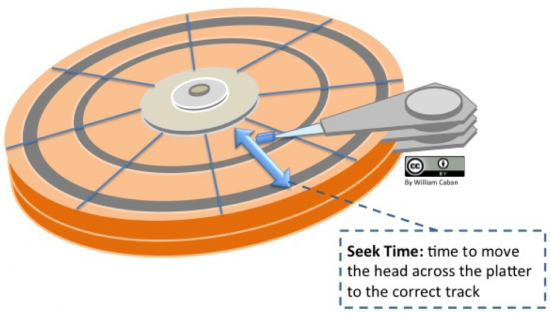
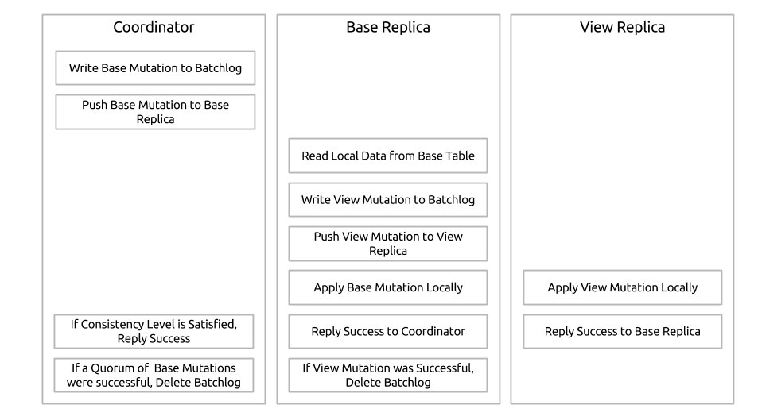
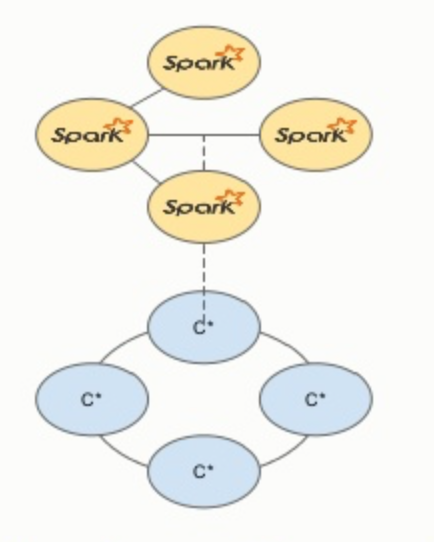
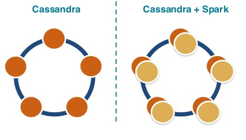
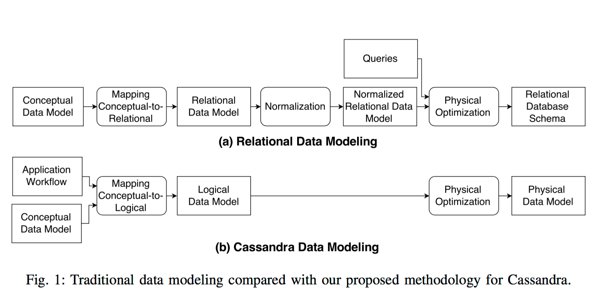
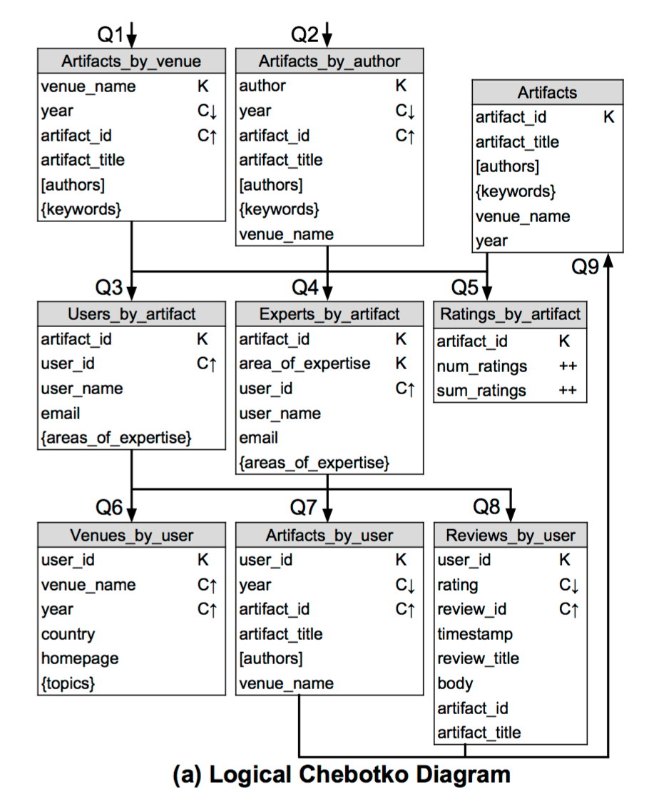
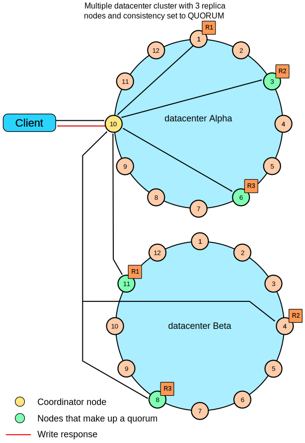

<!doctype html>
<html>
  <head>
    <meta charset="utf-8">
    <meta name="viewport" content="width=device-width, initial-scale=1.0, maximum-scale=1.0, user-scalable=no">

    <title>Cassandra 101</title>

    <link rel="stylesheet" href="https://cdnjs.cloudflare.com/ajax/libs/reveal.js/3.5.0/css/reveal.css">
    <link rel="stylesheet" href="https://cdnjs.cloudflare.com/ajax/libs/reveal.js/3.5.0/css/theme/black.css">

    <!-- Theme used for syntax highlighting of code -->
    <link rel="stylesheet" href="https://cdnjs.cloudflare.com/ajax/libs/reveal.js/3.5.0/lib/css/zenburn.css">

    <!-- Printing and PDF exports -->
    <script>
      var link = document.createElement( 'link' );
      link.rel = 'stylesheet';
      link.type = 'text/css';
      link.href = window.location.search.match( /print-pdf/gi ) ? 'https://cdnjs.cloudflare.com/ajax/libs/reveal.js/3.5.0/css/print/pdf.css' : 'https://cdnjs.cloudflare.com/ajax/libs/reveal.js/3.5.0/css/print/paper.css';
      document.getElementsByTagName( 'head' )[0].appendChild( link );
    </script>

    <style>
      .reveal section img {
        background:none;
        border:none;
        box-shadow:none;
      }
      .slides .footnote{
        position: absolute;
        bottom: 0;
        left: 0;
        right: 0;
        font-size: 30%;
        text-align: center;
      }
    </style>
  </head>
  <body>
    <div class="reveal">
      <div class="slides">
        <section>
          
        </section>
        <section data-markdown
          data-separator="^----\n$"
          data-separator-vertical="^--\n$"
          data-separator-notes="^Note:"
          data-attributes="--attr=(.*?)$">
          <script type="text/template">
            ### What's covered ###

            --

            - Understanding the good and bad points between Cassandra and other database <!-- .element: class="fragment" -->

            - Become beginner's mind to start to develop an application with Cassandra <!-- .element: class="fragment" -->

              *After the course, you still have many things to study further* <!-- .element: class="fragment" -->

            --

            ### What's not covered ###

            - Operation Management: *monitoring, customize configuration and etc.*

            - Multiple Datacenter: *multple geolocated datacenter, in the same cluster*

            ----

            ### Target Audiences ###

            --

            - Familiar with RDBMS <!-- .element: class="fragment" -->

              *CQL is similar to SQL, but not all*  <!-- .element: class="fragment" -->

            --

            - Basic programming in Python <!-- .element: class="fragment" -->

              *Define variables, functions* <!-- .element: class="fragment" -->

              *Import library into script* <!-- .element: class="fragment" -->

            --

            - Basic skill in Unix environment <!-- .element: class="fragment" -->

              *Use SSH to connect remote host* <!-- .element: class="fragment" -->

              *Manage with files on Linux server* <!-- .element: class="fragment" -->

            ----

          </script>
        </section>
        <section data-markdown
          data-separator="^----\n$"
          data-separator-vertical="^--\n$"
          data-separator-notes="^Note:"
          data-attributes="--attr=(.*?)$" >
          <script type="text/template">
            ### Apache Cassandra ###

            - Distributed <!-- .element: class="fragment" -->
            - Scalable <!-- .element: class="fragment" -->
            - High availability <!-- .element: class="fragment" -->
            - Database <!-- .element: class="fragment" -->

            ----

            ### ACID ###
            - Atomicity <!-- .element: class="fragment" -->
            - Consistency <!-- .element: class="fragment" -->
            - Isolation <!-- .element: class="fragment" -->
            - Durability <!-- .element: class="fragment" -->

            Note:
            - Database Properties

            ----

            ### Scaling ###
              - read workload <!-- .element: class="fragment" -->
              - write workload <!-- .element: class="fragment" -->

            Note:
            - why scale? (more usage, fault tolerance)
            - scale type (vertical / horizontal)

            ----

            ### Master-Slave ###
            - Replication

            Note:
            - scale read
            - write to master

            ----

            ### Sharding ###
            - Partition
            - Hot shard!!! <!-- .element: class="fragment" -->
            - Scale??? <!-- .element: class="fragment" -->

            Note:
            - scale write
            - can mixed with master-slave
            - Hot shard, Scale
              - need to reshard
            - multi write conflict?

            ----

            ### CAP ###
            - Consistency <!-- .element: class="fragment" -->
            - Availability <!-- .element: class="fragment" -->
            - Partition Tolerance <!-- .element: class="fragment" -->

            Note:
            - choose 2 from 3 !BUT! it is loosen one constraint

            --

            ### Consistency Level ###
            - Write
            - Read
            - Quorum
            - Strong Consistency

            --

            ### Example ###
            - Write / Read replication factor = 3

            ----

            ### Cassandra ###

            <div>
              
              <p class="footnote">Cassandra by Evelyn De Morgan (1898, London); Cassandra in front of the burning city of Troy at the peak of her insanity.</p>
            </div> <!-- .element: class="fragment" -->

            ----

            ### Installation & Configuration ###

            ----

            ### Configuration ###

            ```yaml
            cluster_name: 'Geeky Cluster'

            num_tokens: 256

            data_file_directories:
                - /var/lib/cassandra/data

            commitlog_directory: /var/lib/cassandra/commitlog

            seed_provider:
                # Addresses of hosts that are deemed contact points.
                # Cassandra nodes use this list of hosts to find each other and learn
                # the topology of the ring.  You must change this if you are running
                # multiple nodes!
                - class_name: org.apache.cassandra.locator.SimpleSeedProvider
                  parameters:
                      # seeds is actually a comma-delimited list of addresses.
                      # Ex: "<ip1>,<ip2>,<ip3>"
                      - seeds: "cassandra001,cassandra002"

            listen_interface: eth0

            rpc_interface: eth0

            endpoint_snitch: GossipingPropertyFileSnitch
            ```


            Note:
              - separate commitlog and datalog dir for performance (on HDD)
              - use difference interface between serving client  and cassandra internal usage

            ----

            ### Nodetool ###
            command line interface for managing cluster

            ```
            $ nodetool [options] command [args]
            ```

            ----

            ### Write Path ###

            - logging data in commit log
            - write data to memtable
            - flush data from memtable
            - store data on disk in SSTable

            

            --

            <!-- --attr=data-background="white" -->
            

            ----

            ### Read Path ###

            

            --

            <!-- --attr=data-background="white" -->
            
            
            ----

            ### Data Modeling ###
            
            ----

            ### Primary Key ###
            <span style="color: yellow;">Partitioning concept</span> is embed in Primary Key
            
            <p>Hash(Tokenize(Parition Key)) = Node</p>
            </img>
            
            --

            > Optimize Read?
            
            Read one node at a time <!-- .element: class="fragment" -->

            --

            ### Know your data 'n hardware ###
            - Max(Node) = Cardinality(Partition Key) <!-- .element: class="fragment" -->
            - How balance of data in each partition? <!-- .element: class="fragment" -->
            - Read / Write behaviour. <!-- .element: class="fragment" -->
            
            ----

            Cassandra is <span style="color: yellow;">Wide-Column</span> Store

            --
            
            > <small>CREATE TABLE web_log (user_id, access_time, path, server <br/>
              PRIMARY KEY((user_id), access_time));


              | user_id = 0 | access_time = t1 | access_time = t2 | access_time = t3 |
              | ------------- |-------------|-------------|-----|
              | | path = "..." | path = "..." | path = "..." |
              | | server = "..." | server = "..." | server = "..." |
              | user_id = 1 | access_time = t2 | access_time = t3
              | | path = "..." | path = "..." |
              | | server = "..." | server = "..." |

            --

            > You can query clustering key as range
            
            --

            Cassandra was born in "HDD" era
            

            </img>

            --
            
            ### Know your data ##
            
            - Read as structed. <!-- .element: class="fragment" -->
            
            - Wide partition cause bigger range to search <!-- .element: class="fragment" -->
            
            - Primary Key is not only identity of data, it's how data is arranged. <!-- .element: class="fragment" -->

            ----

            ### Lightweight Transactions ###

            Compare-and-set

            --

            INSERT ... IF NOT EXIST

            --

            UPDATE ... IF xxx = "value"

            --

            DELETE ... IF xxx = "value"

            ----

            ### Materialize View ###

            Indexed view
            
            It's just another table.

            --

            
            ### Rule ###
            
            PK(base table) ⊆ PK(materialized view)
            
            n(PK(materialized table) - PK(base table)) <= 1
            
            --

            ### Materialize view machnism ###

            </img>

            > <small>It's not gurantee write on materialized view, 
              but well design cause eventually consistency within eye blink.</small><!-- .element: class="fragment" -->

            ----

            ### Whole table processing ###
            
            --

            Data size fit to memory
            <span style="color: yellow;">any lib works</span> <!-- .element: class="fragment" -->

            --

            Data size is more than memory of my computer,
            
            <span style="color: yellow;">Spark is a choice</span><!-- .element: class="fragment" -->
            
            <div>
              </img>
              <p class="footnote">https://www.slideshare.net/patrickmcfadin/apache-cassandra-apache-spark-for-time-series-data</p>
            </div><!-- .element: class="fragment" -->

            --

            Data too large to transfer
            
            <span style="color: yellow;">Place Spark on Cassandra nodes</span><!-- .element: class="fragment" -->
            
            <div>
              </img>
              <p class="footnote">https://openbigdata.wordpress.com/tag/cassandra/</p>
            </div><!-- .element: class="fragment" -->

            ----

            ### Cassandra Design Process ###


            </img>
            <p class="footnote"> A. Chebotko, A. Kashlev, S. Lu; A Big Data modeling Methodology for Apache Cassandra</p>

            --

            Chebotko Model

            </img>
            <p class="footnote"> A. Chebotko, A. Kashlev, S. Lu; A Big Data modeling Methodology for Apache Cassandra</p>

            ----

            ### Multiple Datacenter ###
            - Disaster recover
            - Different workload
              - Realtime
              - Analytic

            --

            

            --

            

            --

            ### Replication ###
            - Replication Factor
            - Replication Strategy
              - SimpleStrategy
              - NetworkTopology

            --

            ### Snitches ###
            - SimpleSnitch
            - RackInferringSnitch
            - PropertyFileSnitch
            - GossipingPropertyFileSnitch
            - CloudstackSnitch
            - GoogleCloudSnitch
            - EC2Snitch
            - EC2MultiRegionSnitch

            --

            ### Consitency ###
            - ANY
            - ONE
            - TWO
            - THREE
            - QUORUM
            - SERIAL
            - LOCAL_ONE
            - LOCAL_QUORUM
            - LOCAL_SERIAL
            - EACH_QUORUM
            - ALL

            --

            <!-- --attr=data-background="white" -->
            ### Write Request ###
            

            --

            <!-- --attr=data-background="white" -->
            

          </script>
        </section>
      </div>
    </div>

    <script src="https://cdnjs.cloudflare.com/ajax/libs/reveal.js/3.5.0/lib/js/head.min.js"></script>
    <script src="https://cdnjs.cloudflare.com/ajax/libs/reveal.js/3.5.0/js/reveal.js"></script>

    <script>
      // More info about config & dependencies:
      // - https://github.com/hakimel/reveal.js#configuration
      // - https://github.com/hakimel/reveal.js#dependencies
      Reveal.initialize({
        slideNumber: 'c/t',
        history: true,
        dependencies: [
          { src: 'https://cdnjs.cloudflare.com/ajax/libs/reveal.js/3.5.0/plugin/markdown/marked.js' },
          { src: 'https://cdnjs.cloudflare.com/ajax/libs/reveal.js/3.5.0/plugin/markdown/markdown.js' },
          { src: 'https://cdnjs.cloudflare.com/ajax/libs/reveal.js/3.5.0/plugin/notes/notes.js', async: true },
          { src: 'https://cdnjs.cloudflare.com/ajax/libs/reveal.js/3.5.0/plugin/highlight/highlight.js', async: true, callback: function() { hljs.initHighlightingOnLoad(); } }
        ]
      });
    </script>
  </body>
</html>
